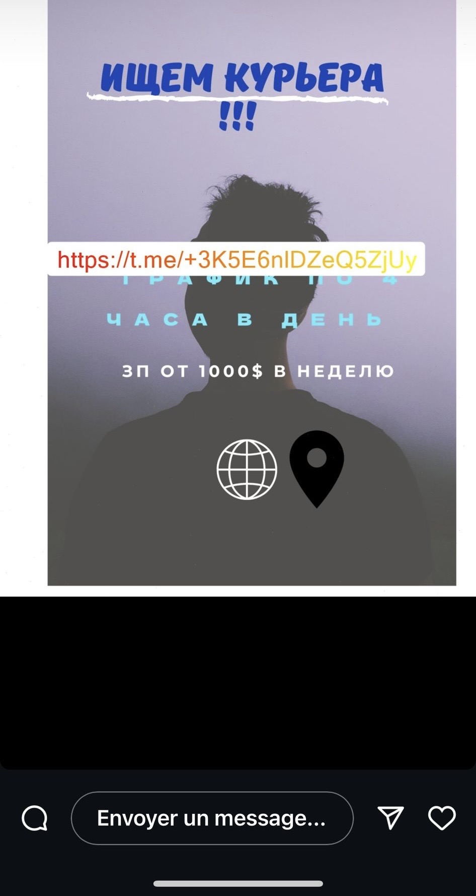
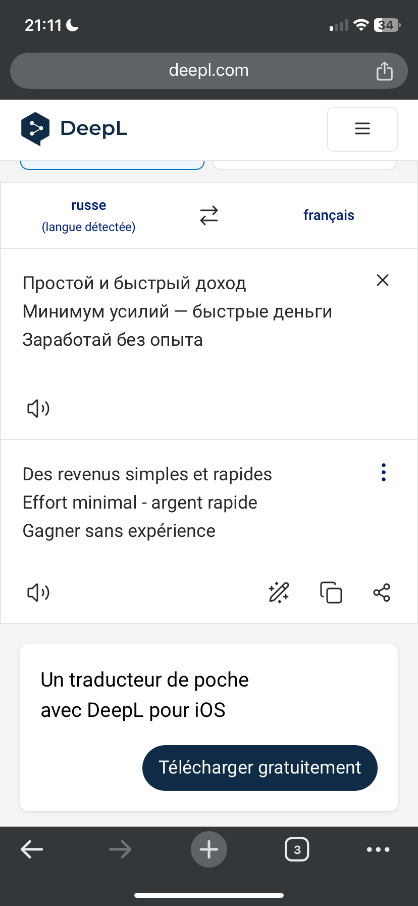
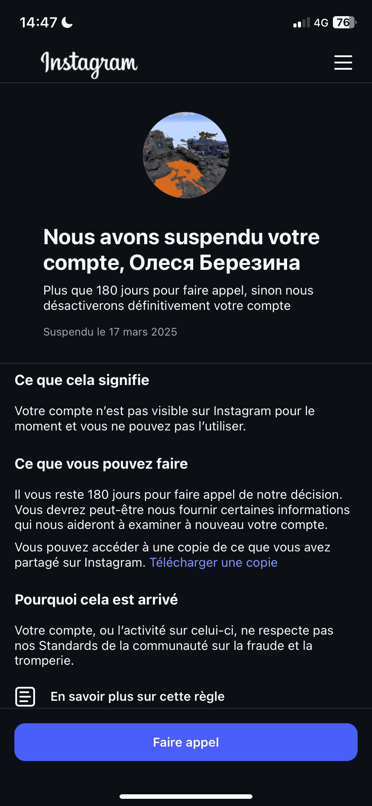
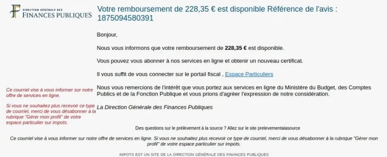

Usurpation d'identité et bonnes pratiques

Définition
L'usurpation d'identité est la faculté de se faire passer pour quelqu'un d'autre, souvent en lui dérobant des documents importants
(carte d'indentité, carte bleue...). Le gouvernement français définit ce terme comme un "moyen de commettre une escroquerie en
utilisant vos données personnelles et/ou bancaires sans votre accord".
Quelques chiffres
Dans le top 3 des usurpations les plus, courantes, on retrouve :
- Le vol de carte de crédit, qui représente à lui seul près d'un tiers dess usurpations d'identité
- La fraude au prêt au au bail (1/7 des usurpations). Ce type d'usurpation permet de voler, en moyenne, 19 000 euros par usurpation.
- La fraude aux services publics (1/9)
Chaque année, en France, ce sont au moins 200 000 personnes qui sont touchées. Cela représente un total d'au moins 500 000 000 d'euros à l'année.
Vous pourrez trouver un reportage sur le sujet
en cliquant ici.
Méthodes
Il s'agit ici de présenter des méthodes couramment employées par les escrocs.
1. Les réseaux sociaux
Peut-être la méthode la plus répandue au vu de sa simplicité ; il suffit en apparence de créer un compte à l'image d"un compte existant (et souvent
populaire) : Squeezie, MrBeast, Angèle..., le but étant d'appâter des fans avec des offres en apparence légitimes pour ensuite leur dérober des
identifiants/mots de passe.
Un problème majeur de ce type d'arnaque est que, si vous vous faites avoir, votre compte sera sûrement supprimé car allant à l'encontre des Conditions
de Service de la plateforme. Ci-dessous un exemple d'un tel compte.



NB : si vous vous faites pirater un compte comme cela, désactivez-le au plus vite (pour empêcher le malfaiteur de se faire passer pour vous),
et signalez cet incident à la compagnie concernée.
2. Les faux mails
Comme mentionné dans la section sur les
arnaques aux faux sites internet, les faux mails (et, par extension, les
faux sites internet) sont une méthode classique pour dérober des informations personelles. L'attaquant vous envoie un mail en apparence légitime
(même s'il existe des critères trahissant son intention véritable) - souvent en se faisant passer pour une banque, un livreur... Ce mail vous redirige
ensuite vers une plateforme en ligne (un faux site web ; même si parfois, un unique clic sur un lien provenant du mail vous pirate directement) qui
vous demandera, par exemple, vos identifiants bancaires.
À noter que cela peut aussi se faire via un message, par exemple un livreur voulant vous notifier que votre colis est retenu à l'atelier (alors que vous
n'attendez pas de colis...)

3. Les vols "physiques"
Ici, pas besoin de faux site internet ou de faux mails : l'attaquant s'en prend physiquement à sa victime. Souvent, cela est fait dans un contexte où
la victime n'a pas le temps ou l'énergie de se défendre (à la fermeture des portes d'un train, par exemple). En cas de vol dit "à l'arrachée", bloquez
immédiatement votre compte en banque (si votre carte bancaire a été volée) et signalez-vous à un poste de police (afin de limiter les dégâts quant
au vol de votre carte d'identité).
Pour limiter les pertes financières si vous perdez votre carte bancaire, activez l'authentification à deux niveaux : à chaque achat effectué avec votre
carte bancaire, une confirmation sera demandée directement sur le site de votre banque. Cela ajoute un niveau de sécurité quant au vol de vos données
bancaires.
DO/DON'T
DO
- Faites attention à qui vous parlez sur Internet ou par téléphone
- Vérifiez les paramètres de confidentialité de vos informations personnelles
- Vérifiez régulièrement vos relevés de compte bancaire
- Détruisez tous les documents (papiers ou numériques) sensibles avant de les jeter.
- Utilisez des mots de passe différents et complexes pour chaque site et application.
- Pensez à mettre un filigrane (texte incliné sur un document sensible, limitant son usage) sur vos documents numériques sensibles (Possible sur ce site du gouvernement).
DON'T
- Ne communiquez jamais d'informations personnelles sensibles
- Ne pas écrire vos mots de passe sur un document non sécurisé en ligne
- Ne pas cliquer sur tous les liens figurant dans des mails sans les analyser au préalable
- Ne pas faire aveuglément confiance à des inconnus